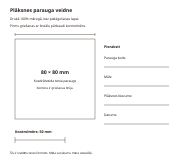

Veidošana ar rokām · Stunda 4 no 6
Vienādas plāksnes pēc veidnes
Izvel vienmērīgu māla plāksni un pēc vienas veidnes piegriez trīs 80 × 80 mm kvadrātus. Nolasot biezumu un salīdzinot tikko izveltu un agrāk sagatavotu paraugu, izvēlies, kā detaļas glabāt nākamajam savienošanas vingrinājumam.
Stundas rezultāts. Uz dēļa ir trīs marķēti kvadrāti A, B un C ar pierakstītu sākuma biezumu. Pārbaudīta izdrukātās veidnes 50 mm mēroga līnija, un atsevišķi pierakstīts māla stāvoklis piegriešanas laikā.
Teksts un kadri sagatavoti izmēģinājumam. Norādītie laiki ir plānoti; darbnīcas izmēģinājums un video ieraksts vēl nav dokumentēti.
Pirms filmēšanas un prakses
Priekšzināšanas. Proti sagatavot darba vietu un mitri to uzkopt. Izmanto plastisku veidošanas mālu; iepriekšējā rullīšu stunda nav obligāts priekšnosacījums plākšņu vingrinājumam.
Sagatavo aptuveni 500 g viena māla, divas 6 mm biezuma līstes, pietiekami garu veltni un 80 × 80 mm kvadrāta veidni. Tie ir šī mācību parauga izmēri, nevis prasība visiem darbiem. Iepriekš izveido atsevišķu paraugu P, kas jau tur formu, bet vēl ir mitrs; pieraksti tā sagatavošanas laiku. Ja P vēl nav gatavs, stadiju salīdzinājumu filmē vēlāk.
| Rīks vai materiāls | Kam tas vajadzīgs |
|---|---|
| Veltnis | Pietiekami garš, lai vienlaikus balstītos uz abām līstēm. |
| Divas vienādas biezuma līstes | Šajā vingrinājumā 6 mm, pārbaudītas abos galos. |
| Darba un glabāšanas dēlis | Plāksnes izvelšanai un piegriezto detaļu pārvietošanai ar atbalstu. |
| Kvadrāta veidne | Trīs 80 × 80 mm detaļas ar kodiem A, B un C; mērogu vispirms pārbauda ar lineālu. |
| Modelēšanas nazis | Mitra māla piegriešanai, roku turot ārpus griezuma ceļa. |
| Lineāls | Veidnes mērogam, līstu biezumam un plāksnes malu mērījumiem. |
| Gumijas riba | Vieglai virsmas izlīdzināšanai, ja māls to ļauj bez stiepšanas. |
| Plastmasas pārsegs | Vienādiem detaļu glabāšanas apstākļiem. |
| Paraugs | Sākuma stāvoklis | Izmantošana ainās |
|---|---|---|
| A, B, C | Trīs kvadrāti, izgriezti kadrā no vienas svaigas plāksnes. | 4. līdz 8. aina: piegriešana, pārbaude un glabāšana. |
| P | Iepriekš sagatavots tā paša māla 80 × 80 mm kvadrāts, mitrs, bet stingrāks. | 6. aina: stadiju salīdzinājums; uzrāda faktisko sagatavošanas laiku. |
| M | Šaura mitra mala no tās pašas plāksnes. | 3. aina: biezuma parādīšana, nebojājot A, B un C. |
Pārbaudi pirms ieraksta
- Izdrukātā 50 mm pārbaudes līnija nomērīta ar lineālu; printera mērogs nav pieņemts bez pārbaudes.
- Augšējā kadrā redzami abi veltņa gali un to kontakts ar līstēm.
- A, B, C un agrāk sagatavotajam P ir atšķiramas etiķetes un laika pieraksts.
- Naža kustības priekšā nav kameras balsta, vada vai otras rokas.
Drošība šajā stundā
Griez uz dēļa un turi otru roku ārpus naža ceļa. Plāksnes necel aiz vienas malas. Neizmanto sausas pulverveida piedevas kā atdalītāju; māla atliekas savāc mitri, jo sausi keramikas putekļi var saturēt ieelpojamu silīcija dioksīdu.
Apstājies, ja: Ja plāksne pielīp un stiepjas, apstājies pirms celšanas un pārskati darba virsmu vai māla stāvokli. Ja paraugs kļuvis trausls un plaisā, to neloki un neturpini sausu apdari.

Filmēšanas secība
Ainas un ieteicamais teksts
8 ainas · 4:45
Citāti ir pielāgojams pasniedzēja teksts. Pēc runas atstāj laiku darbības vērošanai. Ja kustība aizņem ilgāk, pagarini ainu un atjauno laika plānu.
-
1. Trīs detaļas un pārbaudīts mērogs
0:00-0:25 · 25 sAinas kods: veid-04-a01
- Kadrējums
- Skats no augšas uz veidni, lineālu un trim parauga vietām uz dēļa.
- Darbība
- Noliek lineālu pie izdrukas 50 mm pārbaudes līnijas. Nosauc kvadrāta 80 × 80 mm izmēru un parādi vietas A, B un C; ja mērogs nesakrīt, izmanto ar lineālu uzzīmētu veidni.
Ieteicamais runājamais teksts
Visas trīs detaļas piegriezīšu pēc vienas veidnes. Vispirms pārbaudu izdrukas mērogu, lai salīdzinājumā nebūtu nejaušas izmēru atšķirības.
- Teksts ekrānā
- Veidne: 80 × 80 mm · pārbaudes līnija: 50 mm
- Pārbaudes kadrs
- Lineāls sākas pie līnijas sākuma un parāda tās faktisko garumu.
- Pauze un montāža
- Izdrukas mērogu saglabā salasāmu vismaz dažas sekundes.
-
2. Līstes un veltņa balsts
0:25-1:00 · 35 sAinas kods: veid-04-a02
- Kadrējums
- Skats no augšas; īss zems tuvplāns uz līstēm.
- Darbība
- Salīdzini līstu biezumu un novieto tās paralēli ar mālu vidū. Veltni uzliec uz abām līstēm, pārbaudot garuma pietiekamību; māla sākuma plāceni ar plaukstām nedaudz saplacini.
Ieteicamais runājamais teksts
Šim paraugam izmantoju divas 6 milimetru līstes. Veltnim jāsasniedz abas, citādi tas vienā pusē var iespiest mālu dziļāk.
- Teksts ekrānā
- Vienādas līstes · balsts abos galos
- Pārbaudes kadrs
- Abi veltņa gali balstās uz līstēm, līstes nav zem māla.
- Pauze un montāža
- Nomainot rakursu, nepārvieto līstes nepamanāmi.
-
3. Izvelšana un biezuma pārbaude
1:00-1:50 · 50 sAinas kods: veid-04-a03
- Kadrējums
- Nepārtraukts roku un veltņa kadrs, tad mitras nogrieztās malas M tuvplāns.
- Darbība
- Izvel mālu vairākos vieglos gājienos, mainot virzienu, kamēr veltnis balstās uz līstēm. Ja vajag, ar ribu viegli izlīdzini virsmu. No malas atdala šauru M joslu un salīdzini biezumu trīs vietās.
Ieteicamais runājamais teksts
Līstes palīdz, bet rezultātu vēl pārbaudu. Piegriešanas malā salīdzinu trīs vietas, nepiespiežot mīksto mālu ar lineālu.
- Teksts ekrānā
- Biezums 3 vietās: ___ / ___ / ___ mm
- Pārbaudes kadrs
- Redzami M mērījumi un nesaspiesta griezuma mala.
- Pauze un montāža
- Ja izmērītais biezums atšķiras no 6 mm, pieraksti faktisko rādījumu.
-
4. Piegriešana pēc vienas veidnes
1:50-2:35 · 45 sAinas kods: veid-04-a04
- Kadrējums
- Skats no augšas ar visu naža un atbalstošās rokas kustības ceļu.
- Darbība
- Novieto veidni, tur to ārpus griezuma līnijas un izgriez A ar nazi aptuveni vertikāli pret dēli. Atkārto B un C, katru reizi pārceļot to pašu veidni; nevelc nazi pret pirkstiem.
Ieteicamais runājamais teksts
Veidni pārceļu katrai detaļai atsevišķi. Nazi vadu gar malu, bet pirkstus atstāju drošā attālumā no griezuma.
- Teksts ekrānā
- A · B · C no vienas plāksnes
- Pārbaudes kadrs
- Visi kvadrāti veidoti ar to pašu veidni, un griezumi sasniedz dēli.
- Pauze un montāža
- Pirmo kvadrātu parādi pilnībā, atkārtojumus vari saīsināt.
-
5. Atdalīšana un pārvietošana
2:35-3:10 · 35 sAinas kods: veid-04-a05
- Kadrējums
- Zems skats gar dēli, pēc tam augšējais detaļu izkārtojums.
- Darbība
- Noņem apkārtējos atgriezumus, atstājot kvadrātus uz atbalsta. Ja jāmaina dēlis, atbalsti visu detaļu ar platu pamatni; pārāk mīkstu detaļu atstāj vietā. Pieliec kodus pie attiecīgajām pozīcijām.
Ieteicamais runājamais teksts
Vispirms novācu atgriezumus. Detaļu nepacelšu aiz stūra; ja tā vēl ļimst, pārvietošu visu dēli.
- Teksts ekrānā
- Atbalsti visu detaļu
- Pārbaudes kadrs
- Kvadrāti pēc darbības nav izstiepti vai ieliekti.
- Pauze un montāža
- Ja detaļu atstāj uz sākotnējā dēļa, skaidri parādi šo izvēli.
-
6. Svaiga un stingrāka parauga salīdzinājums
3:10-3:50 · 40 sAinas kods: veid-04-a06
- Kadrējums
- A un iepriekš sagatavotais P vienā rakursā ar abām etiķetēm.
- Darbība
- Uz svaiga atgriezuma un P malas veic ļoti vieglu spiediena pārbaudi, atbalstot tos uz dēļa. Parādi, cik viegli rodas iespiedums un vai paraugs tur formu; pieraksti katra sagatavošanas laiku.
Ieteicamais runājamais teksts
Šī plāksne ir tikko izvelta. P sagatavots agrāk un ir stingrāks; salīdzinām redzamās pazīmes, nevis pieņemam vienādu žūšanas laiku visiem māliem.
- Teksts ekrānā
- P: agrāk sagatavots paraugs · faktiskais laiks: ___
- Pārbaudes kadrs
- Paraugu nomaiņa ir skaidra, un P nav salocīts līdz plaisai.
- Pauze un montāža
- Ievieto uzrakstu par laika pārlēcienu un parauga kodu P.
-
7. Izmēri un glabāšanas izvēle
3:50-4:20 · 30 sAinas kods: veid-04-a07
- Kadrējums
- Lineāls pie A, B un C; pārsega uzlikšana kopplānā.
- Darbība
- Nomēri katra svaigā kvadrāta divas malas un pieraksti faktiskos izmērus. Atstāj detaļas vienādos apstākļos uz līdzena atbalsta, pasargā no tieša siltuma un pārsegumu pielāgo nākamās stundas paredzētajam laikam.
Ieteicamais runājamais teksts
Pierakstu izmērus tagad, kamēr detaļas svaigas. Nākamajai savienošanai gribu līdzīgu stāvokli visām daļām, tāpēc glabāju tās kopā.
- Teksts ekrānā
- Faktiskie izmēri · līdzīgi glabāšanas apstākļi
- Pārbaudes kadrs
- Visiem kodiem ir savs mērījums un vienāds glabāšanas apraksts.
- Pauze un montāža
- Nerādi vēl neizmērītu sausa parauga izmēru kā faktisku rezultātu.
-
8. Prakses uzdevums un nākamā pārbaude
4:20-4:45 · 25 sAinas kods: veid-04-a08
- Kadrējums
- Trīs kvadrāti zem pārsega, darba lapas aizpildījums tuvplānā.
- Darbība
- Atzīmē, vai detaļas vēl deformējas pie paņemšanas vai jau tur formu. Pieraksti, kad tās pārbaudīsi vēlreiz; saglabā veidni nākamajam savienojuma paraugam un mitri savāc griezumu atliekas.
Ieteicamais runājamais teksts
Tavs rezultāts ir trīs salīdzināmas detaļas un sākuma pieraksts. Savienošanas stundā vēlreiz pārbaudīsim to mitrumu un stingrību.
- Teksts ekrānā
- Saglabā detaļas un veidni · turpini ar 5. stundu
- Pārbaudes kadrs
- Darba lapā nošķirti piegriešanas mērījumi un vēl gaidāmā stadijas pārbaude.
- Pauze un montāža
- Noslēgumā nepārlec uz savienotu darbu bez skaidras norādes uz nākamo stundu.
Ainu atzīmes saglabājas šajā pārlūkā, ja pieejama lokālā glabāšana. Tās atzīmē ieraksta progresu, nevis tehniskās drošības pārbaudi.
Prakse darbnīcā
Pamatuzdevums. Uz dēļa ir trīs marķēti kvadrāti A, B un C ar pierakstītu sākuma biezumu. Pārbaudīta izdrukātās veidnes 50 mm mēroga līnija, un atsevišķi pierakstīts māla stāvoklis piegriešanas laikā.
| Darba posms | Plānotais laiks |
|---|---|
| Veidnes mēroga, līstu un darba vietas pārbaude | 10 min |
| Plāksnes izvelšana un biezuma salīdzinājums | 15 min |
| Trīs detaļu piegriešana un marķēšana | 15 min |
| Izmēri, stadiju salīdzinājums un pārsegums | 10 min |
| Mitrā uzkopšana un pieraksts | 10 min |
| Kopā | 60 min |
Filmēšana. Plāno 60 līdz 90 minūtes un atsevišķu agrāk sagatavota P kadru. Tas ir neizmēģināts filmēšanas plāns; P sagatavošanas gaidīšana nav ieskaitīta.
Gaidīšana. A, B un C pirms nākamās stundas var būt vajadzīga apžūšana vai mitruma izlīdzināšanās zem pārsega. Ilgumu nosaka māls, biezums, dēlis un telpa; stingrību pārbauda, nevis pieņem pēc minūšu skaita.
Ja paliek laiks. Pēc tās pašas veidnes izgriez papildu D un E, ja nākamajā stundā vēlies arī atsevišķu savienojuma šķērsgriezumu. Lieto to pašu mālu, biezumu un glabāšanas apstākļus.
Ja jāpārtrauc. Atstāj A, B un C uz līdzena dēļa ar redzamiem kodiem un pārsegu. Nākamajā reizē pārbaudi stāvokli pirms celšanas; līdzība ar P fotogrāfijā viena pati nenosaka gatavību savienošanai.
Ko darīt, ja neizdodas
| Novērotā pazīme | Iespējamais iemesls | Nākamā darbība |
|---|---|---|
| Vienā malā plāksne ir plānāka. | Veltnis nav balstījies uz abām vienāda biezuma līstēm. | Pārbaudi līstu biezumu un veltņa garumu, tad izvel jaunu nelielu testa laukumu. |
| Kvadrāts pacelšanas laikā izstiepjas. | Plāksne vēl ļoti mīksta vai pielipusi pie virsmas. | Atstāj to uz dēļa un turpini ar citu detaļu; nākamajā mēģinājumā pārbaudi virsmu pirms izvelšanas. |
| A un B vēlāk atšķiras pēc stingrības. | Viena detaļa bijusi vairāk atsegta vai tuvāk siltuma avotam. | Pieraksti atšķirību; nākamajam savienojumam izvēlies līdzīga stāvokļa pāri, nevis slapini tikai vienas detaļas malu. |
Drukājama darba lapa · Veidošana ar rokām 04
Vienādas plāksnes pēc veidnes: pieraksti
Datums: ____________________ Darba / māla kods: ____________________
Mērķis. Uz dēļa ir trīs marķēti kvadrāti A, B un C ar pierakstītu sākuma biezumu. Pārbaudīta izdrukātās veidnes 50 mm mēroga līnija, un atsevišķi pierakstīts māla stāvoklis piegriešanas laikā.
Pirms uzdevuma. Griez uz dēļa un turi otru roku ārpus naža ceļa. Plāksnes necel aiz vienas malas. Neizmanto sausas pulverveida piedevas kā atdalītāju; māla atliekas savāc mitri, jo sausi keramikas putekļi var saturēt ieelpojamu silīcija dioksīdu.
| Mēģinājums / pārbaude | Detaļa | Divu malu izmērs un biezums | Stadija, laiks un pārsegums |
|---|---|---|---|
| A | |||
| B | |||
| C |
Ko pierakstīt darbnīcas žurnālā
- Vai izdrukas 50 mm pārbaudes līnija sakrita ar lineālu?
- Kāds bija līstu un faktiskās plāksnes biezums trīs vietās?
- Kādi ir A, B un C izmēri tūlīt pēc piegriešanas?
- Cikos sagatavots P, un ar ko tā stāvoklis atšķiras no svaigās plāksnes?
Viena nākamā izmaiņa:
Faktiskais darba laiks un pieredzes līmenis:
Pārbaudītais rezultāts un neatbildētie jautājumi:
Palīgmateriāli šai stundai
- Plāksnes tehnika: kā panākt vienmērīgu biezumu
- Kā izvairīties no deformācijas rokas veidojumos
- Kā žāvēt šķīvjus, lai tie nelocītos
- Ādas cietības stadija un kā to atpazīt

Pārbaudītie uzziņas materiāli
Avoti pārskatīti 10.10.2026. Tehniskās norādes piemēro attiecīgajam procesam un konkrētajai iekārtai. Ārvalstu prasības nav Latvijas normatīvu aizstājējs.
Izmēģinājuma un montāžas pieraksts
Scenārija redakcija: Praktiskais izmēģinājums: vēl nav dokumentēts. Aizpildi tabulu pēc faktiskā mēģinājuma un labo ainu laikus.
| Ainas kods / dublis | Izmantojamais fragments | Kas jāprecizē |
|---|---|---|
| veid-04-a___ | ________________ | ________________ |
| veid-04-a___ | ________________ | ________________ |